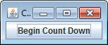
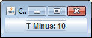
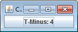
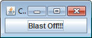
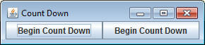
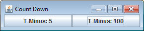
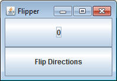
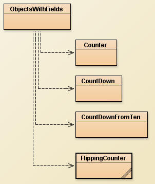

So far we've been creating simple objects with a single action. When a button is pressed, a single action is performed. That action can never be different. A real object has the ability to change each of it's actions depending on the situation.
For example, copy the following class into your project. (IT WILL NOT COMPILE UNTIL YOU HAVE THE COUNTER CLASS)
import sacco.gui.*;
public class ObjectsWithFields
{
public static void firstField()
{
SFrame frame = new SFrame("Count Up");
frame.setLayout(new GridLayout(1,1));
SButton button = new SButton("Click Count: 0");
button.addButtonListener(new CountUp());
frame.add(button);
frame.pack();
frame.setVisible(true);
}
}
Reading through the method above shows a simple GUI with a single button labeled "0". This is not a complete program until the CountUp class is finished. Copy the incomplete CountUp class below and compile your program. At the moment it does absolutely nothing, but you want to make sure that it compiles before you proceed.
The CountUp class
import sacco.gui.*;
public class CountUp implements ButtonListener
{
public CountUp()
{
}
public void onButtonPress(SButton source)
{
}
}
Clicking the button at this point does absolutely nothing. We can fix that.
Goal: To fix it so that every time you click the button, the number increases.
We need a variable to help us. It should keep track of every click that happens and update the text to have that variable. Since the text already starts at 0, we should first increase the variable and then set the text of the button to what the variable now reads.
Add the following to the onButtonPress method of the CountUp class:
int count = 0;
count++;
source.setText("Click Count: "+count);
Run the program and test it out. It should start out saying that the click count is 0, but no matter how many times you click, you will get stuck at the following:
The Problem:
The real problem is that the variable is declared as the first line of the method. That means that every time you click, the variable is set to zero. The following line adds one, and then the text of the button is set to that value. This makes it guaranteed to be 1 every time you click it.
What we need:
We need a variable that belongs to the object instead of just the method. It should start at zero, but calling the method should change it without having to set it to 0 first.
Object School: Instance Fields
Instance fields are variables that belong to the object and are part of the information that the object holds as long as it exists. For example, an SButton has an instance field that holds the text of the button. When the setText method is called it changes that variable, thus changing what letters are shown when the button is displayed.
The way you define an instance field is by declaring them at the top of the class and OUTSIDE of any method. Change your CountUp class to have the following, which declares an instance field named count. The word private in front of it means that no other programmer can directly access and change the count variable without your permission. You should always make sure that your instance fields are private.
public class CountUp implements ButtonListener
{
private int count;
public CountUp()
{
...
Notice that all we've done is declare the variable. It still needs to be assigned a starting value. This is where the constructor comes into play.
Object School: The Constructor
The constructor is a special method that is designed to be the first thing that the obejct ever does. The majority of the time, it's job is to put the starting value into any instance fields that the object may have. This is why our previous constructor's didn't do anything. They didn't have any instance fields. Add a line that sets count to 0 in the constructor (and also remove it from the first line fo the onButtonPress method) and you should get the following.
import sacco.gui.*;
public class CountUp implements ButtonListener
{
int count;
public CountUp()
{
count = 0;
}
public void onButtonPress(SButton source)
{
count++;
source.setText("Click Count: "+count);
}
}
It's all about managing the variables that make a CountUp what it is. The class above defies a CountUp as a ButtonListener that has an int at its core. The Constructor shows that in the beginning that variable is set to zero, but whenever the button is pressed that variable is increased and the button's text is changed to include the new value. This is different than before because the variable is no longer set to zero when the button is pressed, meaning that the variable will keep its value when clicked.
Compile an run the program. Notice that now your clicked number can get much higher than 1:
Objects can have as many instance fields as you need in order to define what the obejct is. For exampls: an SFrame has instance fields for the title of the frame, the width, the height, the location on the screen, it's layout manager, all of the components it holds, and more.
| Generally when writing objects: - The instance fields define what the object needs to keep track of. - The constructor is in charge of putting the first value in the instance fields - The rest of the methods either change or return some information about those instance fields |
CountDownFromTen
Add a method to your ObjectsWithFields class that has the following header:
public static void countDown()
Have that method create the following GUI:

Now create a ButtonListener Object named CountDownFromTen. This object will act very similarly to the CountUp object, but with a few changes. This time our goal is to start at 10 and count down until we hit 0. At that point the button should stop counting down and say "Blast Off!!!".

...click...click...
...click...click...
Things to remember to do:
- This time the starting value is 10, so make sure the constructor sets the instance field to 10.
- In the onButtonPress method, use an if statement to determine if you should either set the text to "T-Minus:..." or to "Blast Off!!"
- In your ObjectsWithFields class, don't forget that you need to addButtonListener to make sure that the object is linked with the button.
Using Constructors with Parameters to Change How and Object Behaves:
Add a method to your ObjectsWithFields class that has the following header:
public static void multiCountDown()
Implement the method so that it creates the following GUI:

The CountDownFromTen Object performed a very specific function. No matter how many times you use the object, it will always start at ten and end at 0.
This time our goal is to have two different count downs. The left button should start counting at 5, while the right button should start counting down at 100.

(After one click on each button)The fact that neither counter starts at 10 means that we can't use the CountDownFromTen object as a listener for either button. There are two ways that we can proceed.
1) We could create two different objects countDownFromFive and countDownFrom100, which looked almost identical, except the constructor would say count = 5 or count = 100
2) We could create ONE object class where the constructor took in a parameter to represent its starting value
The second option here is smarter. Not only is it less work, but that object could be used to count down from any number.
Create an object class named CountDown, which will look almost identical to the CountDownFromTen class with the exception of the constructor. You should add a parameter that represents where the counter should start.
...
public CountDown(int startVal)
{
count = startVal;
}
...
Notice that instead of assigning a specific value, we are assigning whatever value is used as a parameter when constructing the object.
Now go to the ObjectsWithFields class. This time you have to create two different CountDown objects, each with a different parameter:
CountDown five = new CountDown(5); CountDown hundred = new CountDown(100);
Since we've defined the parameter to be the starting value, this means that one of the CountDowns will start at five and the other will start at 100. This one object is now reusable in different situations, which makes it more valuable than the CountDownFromTen class.
addButtonListener each of these CountDown objects to a different button and test it out. Hopefully each button starts counting from the correct spot.
Multiple instance fields:
So far we've only made objects with a single instance field, but in reality the number of instance fields that an object should have does not have a limit. The more complex the behavior of the object, the more instance fields may be required.
Add a method to your ObjectsWithFields class that has the following header:
public static void directionFlipper()
Implement the method so that it creates the following GUI:

The idea behind this is that it will be a counter, as we've been doing, but when the "Flip Directions" button is pressed the counting will start going down instead of up. Clicking the "Flip Directions" button again will cause it to switch again.
Create an object class named FlippingCounter that is also a ButtonListener. This time there will be two instance fields:
1) An int to represent the current count
2) A boolean that will represent if the count is increasing or not. A true value will represent increasing, while a false value will represent decreasing.
Create a constructor that starts the count at 0 and the boolean to true. This means that the when the button is first clicked we'll expect it to increase.
IT IS EXREMELY IMPORTANT THAT YOU DO NOT USE TWO DIFFRENT FLIPPINGCOUNTER OBJECTS Create one FlippingCounter, store it into a variable, and add that variable as the buttonListener to both objects. This is because two different objects would have two separate sets of instance fields. If you change the boolean for one object, it can't be seen by the other.
The onButtonPress method:
Now it's time to make the onButtonPress method function. This time it will be more complex. The first thing that you want to do is create a big if statement to determine which button was pressed, but we have a problem. Since the text of the counting button is going to be changing frequently, we cannot use its text to determine what button was pressed. We'll fix this problem in the future, but for now the solution to our problem is to have the first part of the if statement check to see if the "Flip Directions" button was pressed. Then add an else statement, which would only be used if the button wasn't the Flip Directions button.
Now the onButtonPress method is essentially split up into two sections that will be run at different times. Let's start with the else (the counting button). This will act similar to our previous counters, except you will need an if statement to determine whether you should increase your counter or not. If the boolean instance field is true, increase your counter; if it's false, decrease it. Don't forget to set the text of the source button.
Even though the if statement is incomplete, now is a good time to test your program. It should compile and run, but the only functioning part should be the counting button, which should increase. Try temporarily modifying your Constructor to start the boolean instance field at false. If you run it after that the button should decrease the number instead. If this works, you know that you're using your boolean correctly.
Now it's time to finish the if statement that's in your onButtonPress method. In the section that only runs once the "Flip Directions" button is pressed you're going to need another if statement, but this time it's in charge of setting the boolean to its opposite. If it's currently true, set it to false, otherwise set it to true.
BE CAREFUL! A Common mistake is to do the following:
if( isIncreasing == true )
{
isIncreasing = false;
}
if( isIncreasing == false )
{
isIncreasing = true;
}
You should not do this! If the starting value of isIncreasing is true, you set it to false, but then you immediately set it back to true. You should be using an else statment to see if it's false because it will be skipped in the case that the if is true.
